🚧 Work in progress / 制作中 🚧
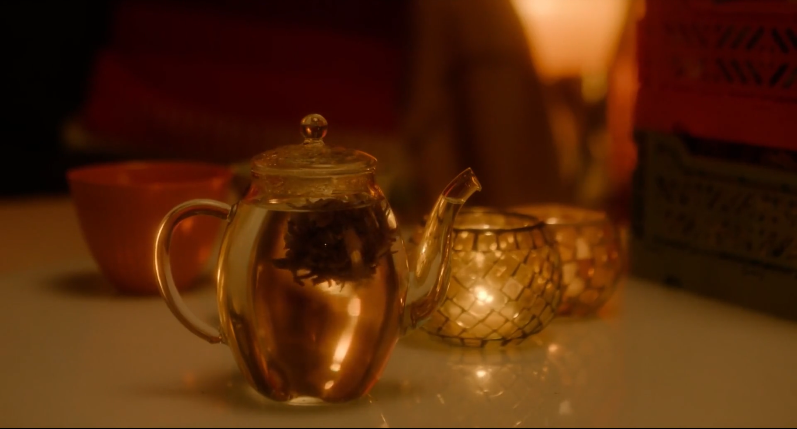
性梦爱三部曲：梦 (Drømmer) — 达格·约翰·豪格鲁德
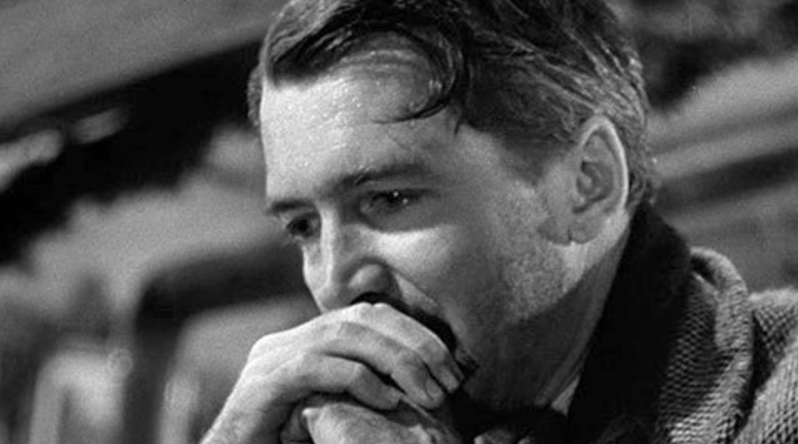
美妙人生 (It's a Wonderful Life) — 法兰克·卡普拉
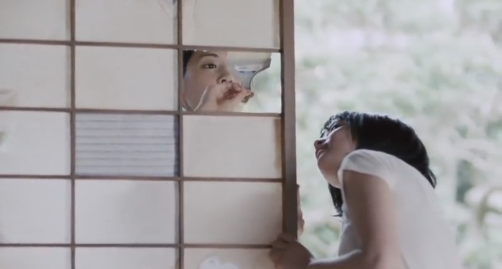
海街日记 (海街diary) — 是枝裕和
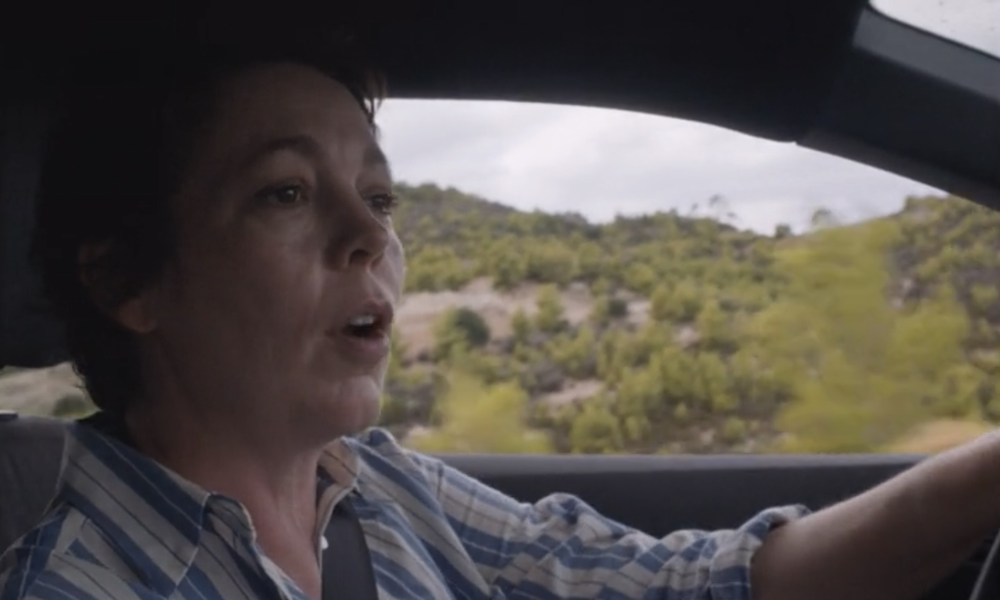
暗处的女儿 (The Lost Daughter) — 玛吉·吉伦哈尔
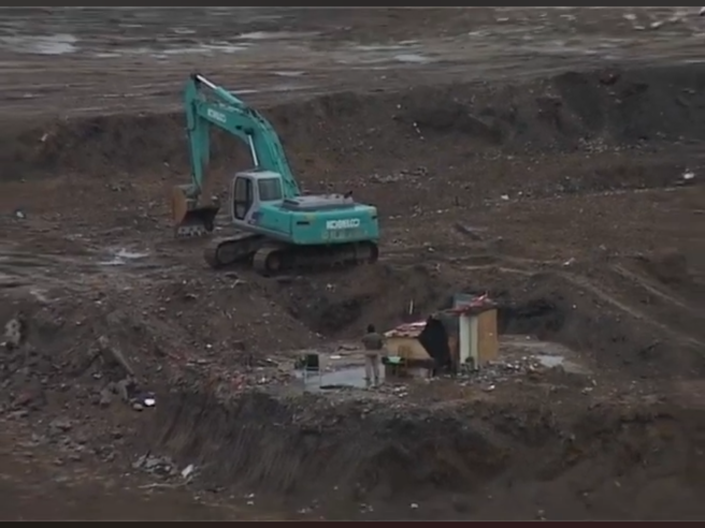
上访 — 赵亮
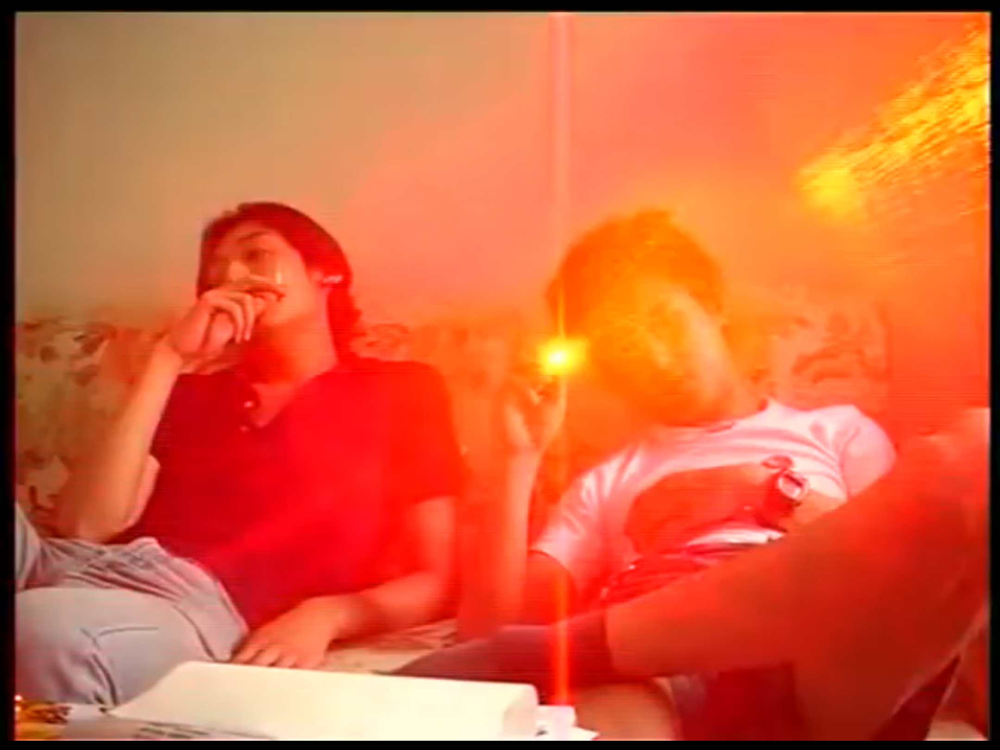
纸飞机 — 赵亮
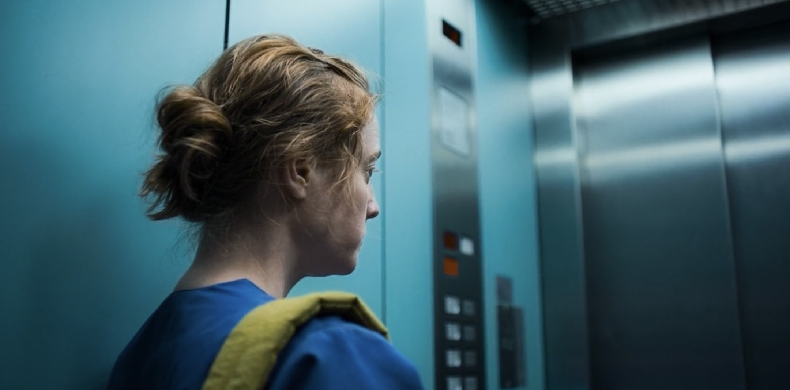
夜班 (Heldin) — 佩特拉·沃尔普
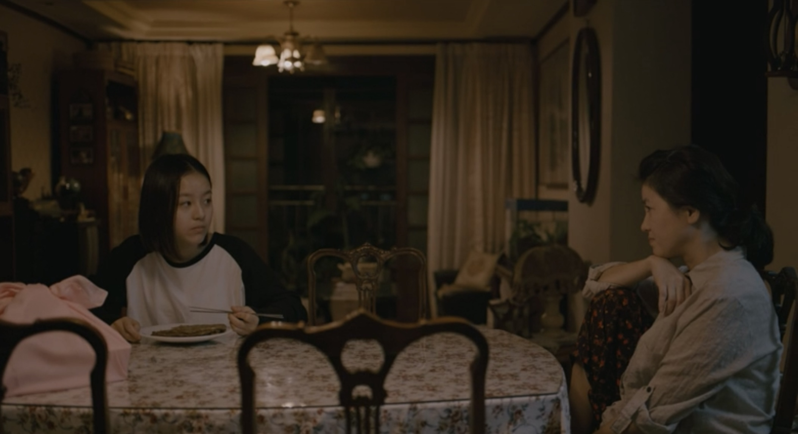
蜂鸟 (벌새) — 金宝拉
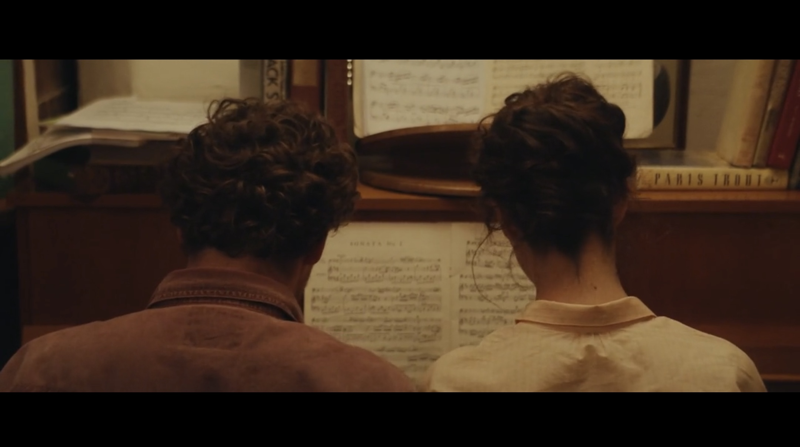
珍·奥斯丁误了我一生 (Jane Austen a gâché ma vie) — 罗拉·皮亚尼
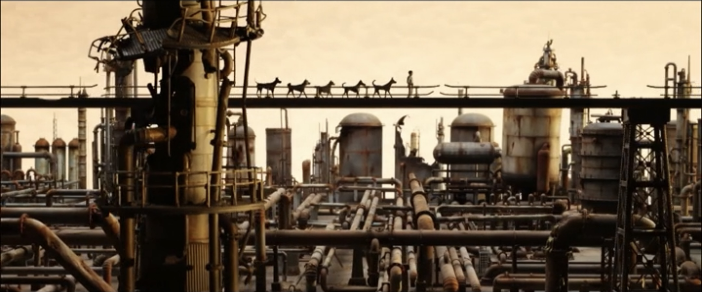
犬之岛 (Isle of Dogs) — 韦斯·安德森
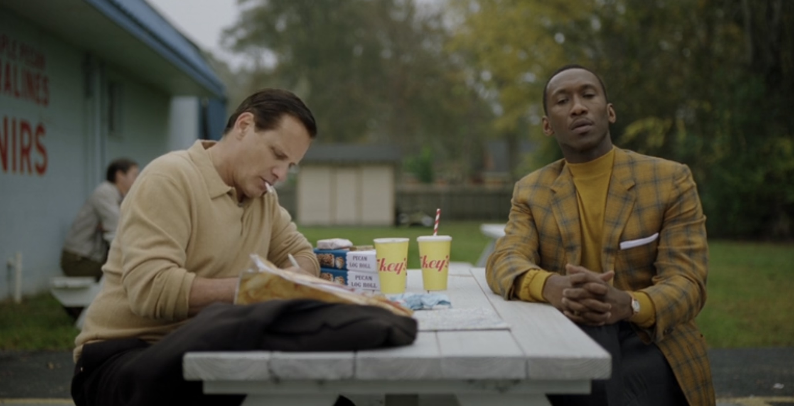
绿皮书 (Green Book) — 彼得·法雷利